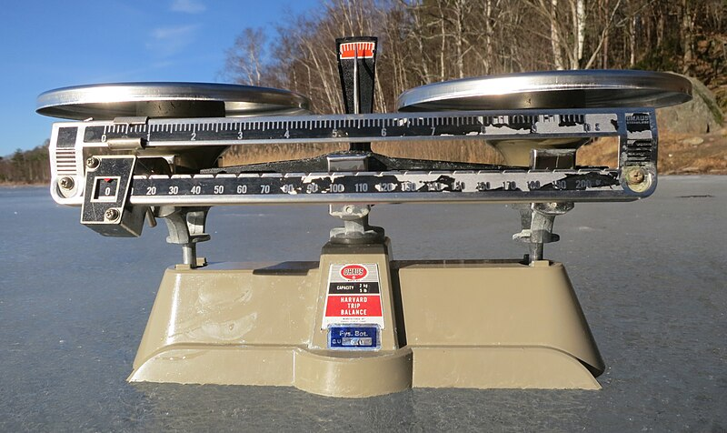
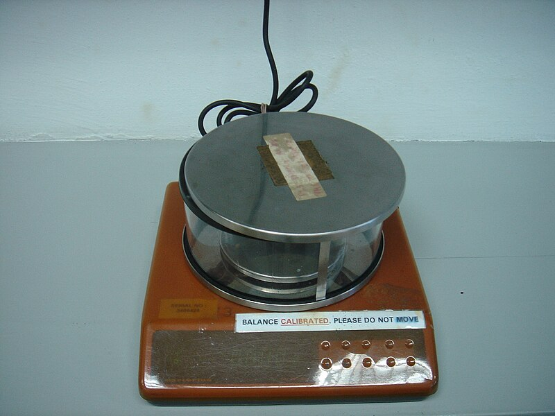

探
本節探究 同樣一杯，水和酒精的質量會一樣嗎？未知金屬塊要怎麼認？
重點概覽：質量 ｜ 實驗 1-2 ｜ 密度
同樣 50 mL，水和酒精拿在手上感覺不一樣；未知金屬塊看起來都是銀亮的。先預測：質量會不會和體積成正比？比值能不能當「身份證」？下面各站找證據。
探究問題：同樣一杯，水和酒精的質量會一樣嗎？未知金屬塊要怎麼認？
重點概覽：質量 ｜ 實驗 1-2 ｜ 密度
同樣 50 mL，水和酒精拿在手上感覺不一樣；未知金屬塊看起來都是銀亮的。先預測：質量會不會和體積成正比？比值能不能當「身份證」？下面各站找證據。
定義、單位、天平
探究線索：同一個蘋果從地球送到月球，質量會變嗎？體重計的讀數會變嗎？
質量是物體所含 。 質量不隨地點改變； 是重力大小，會隨地點改變。
| 單位 | 符號 | 別稱 | 與 g 換算 | 與 kg 換算 |
|---|---|---|---|---|
| 公噸 | t | 噸 | 106 g | 103 kg |
| 公斤 | kg | 千克 | 103 g | 1 kg |
| 公克 | g | 克 | 1 g | 10−3 kg |
| 毫克 | mg | 公絲 | 10−3 g | 10−6 kg |


上皿天平看指針與砝碼；電子天平先調水平氣泡再按歸零。照片：Wikimedia Commons（CC BY-SA）
\[\text{上皿天平測量值}=\text{砝碼總質量}+\text{一位估計值}\]
上皿天平和電子天平都靠重力讓盤下沉或感應器受力。在失重環境，兩邊都「沒有重量」，無法比較質量。
1. (
) 物體從地球移到月球，質量會變小。
訂正：
2. (
) 天平可以在任何地方測量質量。
訂正：
1. 右盤砝碼：一個 50 g、兩個 20 g、三個 1 g。平衡時測量值要含一位估計，最接近？（ ）50＋40＋3＝93 g，再估一位。
2. 質量最大的是？（ ）（A）8 kg 腳踏車 （B）450 g 玩具車 （C）15 mg 筆芯 （D）0.012 t 電腦
這一站的證據：質量是物質多寡，不隨地點變；天平在地球實驗室量質量。下一站動手：水和酒精的質量－體積圖長怎樣？
水、酒精、未知金屬塊
活動紀錄本完整步驟、材料核對表與紀錄表，見實驗專區 1-2。
探究線索：天平讀到的是「筒＋水」。畫質量－體積圖之前，為什麼一定要先減掉空量筒？
目的：測量水與酒精的質量與體積，探討物質質量與體積的關係；再測量未知金屬塊的質量與體積，推測金屬塊種類。
逐項勾選見實驗專區 1-2 核對表。缺件或量筒有裂先舉手。
甲 液體：先秤空 50 mL 量筒 → 加入 10、20、30、40、50 mL 水並秤總質量 → 換成酒精重做 → 減去空筒得液體質量 → 畫質量－體積圖。
乙 金屬塊：先秤質量，再排水法量體積（斜著滑入，避免砸裂量筒），求質量與體積的比值。
這裡只記精要。上課跟著做請到實驗專區，一步一格。
空量筒質量 ＝ 70 g。
| \(V\,(\mathrm{cm}^3)\) | 10 | 20 | 30 | 40 | 50 |
|---|---|---|---|---|---|
| 水的 \(M\,(\mathrm{g})\) | 10 | 20 | 30 | 40 | 50 |
| 酒精的 \(M\,(\mathrm{g})\) | 8 | 16 | 24 | 32 | 40 |
水和酒精的圖都是過原點的直線：同一物質，質量與體積 。 斜率不同，表示 不同，可用來分辨物質。
未知金屬：質量 17.0 g，體積 6.3 cm3，比值約 g/cm3，對照表為 （鋁 2.70、鐵 7.87、銅 8.96）。
過原點：縱軸是液體本身質量；不過原點：縱軸含空筒。斜率 \(=D\)
直線過原點，縱軸是液體質量。若不過原點，縱軸是「筒＋液體」，截距就是空量筒質量。
這一站的證據：同一物質質量與體積成正比，不同物質斜率不同。下一站給密度正式定義。
定義、單位、三種關係圖
探究線索：同一塊鐵切成兩半，密度會變小嗎？體積變小、質量也變小，比值呢？
密度是物質單位體積所含的 。 溫壓一定時，同一物質密度與大小無關，可用來辨認物質種類。
\[\text{密度}=\dfrac{\text{質量}}{\text{體積}}\qquad D=\dfrac{M}{V}\]
質量用天平量，體積用公式或排水法。單位 g/cm3、kg/m3。1 g/cm3 ＝ 1000 kg/m3。
| 固體 | 液體 | 氣體 |
|---|---|---|
| 金 19.30 銀 10.49 銅 8.96 鐵 7.87 鋁 2.70 冰 0.92 地殼約 2.80 |
水銀 13.53 水 1.00 酒精 0.79 |
二氧化碳 0.00198 空氣約 0.0012 氫 0.00009 |
三張關係圖都要標原點 \(O\)、軸名與單位。左：\(M\propto V\)；中：\(D\propto 1/V\)；右：\(D\propto M\)
1. (
) 溫壓一定時，同一物體質量愈大，密度愈高。
訂正：
2. ( ) 密度是物質單位體積所含的質量。
3. (
) 把物體切開使體積變小，密度也會變小。
訂正：
1. 密度 ＝ ／ 。
2. 邊長 2 cm 的金屬立方體質量 48 g，密度＝ g/cm3。
3. 上題切成體積比 2：1，密度比＝ 。
這一站的證據：密度＝質量÷體積，同物質不變，可當身份證。收成速記後，就能回答本節問題。
砝碼、圖、表
右盤：兩個 50 g、一個 10 g、三個 1 g。總質量 50×2＋10＋3＝ g，再加一位估計。
一個 50 g、一個 10 g、兩個 1 g、一個 500 mg。500 mg＝0.5 g，合計 g。
圖過原點，點（10，30）、（20，60）。密度＝30／10＝ g/cm3。
截距 25 g（空筒），點（10，50）、（20，75）。每 10 cm3 增加 25 g，密度＝ g/cm3。
10 cm3 總質量 25 g，20 cm3 為 33 g。液體密度＝（33−25）／10＝0.8 g/cm3；空筒＝25−8＝17 g。總質量 45 g 時，體積＝（45−17）／0.8＝ cm3。
10 cm3→25 g，20 cm3→37 g，則密度 1.2 g/cm3、空筒 13 g。35 cm3 時總質量＝13＋42＝ g。
10、20、30、40 cm3 的總質量為 28、34、40、46 g。每 10 cm3 加 6 g，密度 0.6 g/cm3，空筒 22 g；50 cm3 總質量 g。總質量－體積圖是有正截距的直線，不過原點。
質量不變、密度當身份證
證據卡：這些句子用來支撐下面的「本節主張」。先對照實驗圖，再決定你同不同意。
同樣體積，密度大的比較重
質量是物質的多寡，搬到月球也不變；重量才會變。同樣 50 mL，水和酒精質量不一樣，因為密度不同。同一物質質量與體積成正比，圖的斜率就是密度，可以當身份證：未知金屬塊算出比值，對照表就能推測是鋁、鐵還是銅。
基本題對主張；進階題對易錯
檢驗主張：做題時對照本節問題——水和酒精同樣一杯質量會一樣嗎？金屬塊怎麼認？
1. 質量不隨 改變。
2. 密度＝質量÷ 。
3. 水的密度約 g/cm3。
4. 砝碼要用 夾。
5. 同物質切開，密度 。
1. 圖的斜率代表 。
2. 截距代表 。
3. 1 g/cm3 ＝ kg/m3。
4. 比值約 2.7 的金屬是 。
5. 失重時天平 。